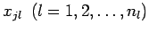
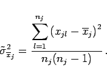
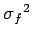

Inhalt Index DeskTop Bronstein

 Wahrscheinlichkeitsrechnung und Mathematische Statistik Theorie der Meßfehler Fehlerfortpflanzung und Fehleranalyse Gaußsches Fehlerfortpflanzungsgesetz
Wahrscheinlichkeitsrechnung und Mathematische Statistik Theorie der Meßfehler Fehlerfortpflanzung und Fehleranalyse Gaußsches Fehlerfortpflanzungsgesetz


Da die Streuungen der unabhängigen Variablen xj unbekannt sind, ersetzt man sie durch Streuungen ihrer Mittelwerte, die aus den Meßwerten  der einzelnen Variablen wie folgt ermittelt werden:
|  | (16.227) |
Mit diesen Werten bildet man als Näherung für :
Diese Formel (16.229) wird GAUSSsches Fehlerfortpflanzungsgesetz genannt.